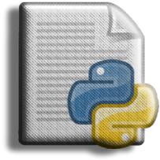

Important Terms
Problem solving is the process of defining a problem, determining a solution, and communicating it.
A high-level language is a programming language, such
as Python, that is designed to be simple to read and write for humans.
Low-level language: A programming language designed to
be easily executed by a computer; also known as "machine language" or
"assembly language."
A program's ability to run on more than one type of computer is referred
to as portability.
Prompt: An
interpreter is a program that reads another program and executes it. The
characters displayed by the interpreter to indicate that it is ready to
accept user input.
A program is a set of instructions that specifies how
to perform a computation.
The print statement instructs the Python interpreter to display a value on the screen.
A special symbol that represents a simple computation,
such as addition, multiplication, or string concatenation.
A value is one of the fundamental units of data that a
program manipulates, such as a number or string.
Type: A
value classification. So far, we've seen integers (type int),
floating-point numbers (type float), and strings (type str).
An integer is a data type that represents whole numbers.
Floating-point: A type of number that can represent fractional parts.
String: A type that represents character sequences.
Natural language: Any of the languages spoken by people that evolved naturally.
Formal language: Any of the languages created by humans for specific purposes, such as representing mathematical concepts or computer programs; all programming languages are formal languages.
Token: A basic element of a program's syntactic structure, analogous to a word in natural language.
Syntax: The rules that govern a program's structure.
Parse: To examine and analyze a program's syntactic structure.
A Bug is a programming error.
Debugging is the process of locating and fixing bugs.
Variable : A name referring to a value.

A statement that assigns a value to a variable is known as an assignment.
A state diagram is a graphical representation of a group of variables and the values to which they refer.
keyword: A reserved word used to parse a program; keywords such as if, def, and while cannot be used as variable names.
One of the values on which an operator operates is referred to as an operand.

A single result is represented by an expression, which is a combination of variables, operators, and values.
evaluate: To reduce an expression to a single value by performing the operations.
A statement is a code section that represents a command or action. So far, we have only seen assignments and print statements.
To execute a statement is to run it and do what it says.
The interactive mode of the Python interpreter allows you to use it by typing code at the prompt.
script mode: A method of using the Python interpreter to read and run code from a script.
A script is a program that is saved in a file.

Order of operations: The rules that govern how expressions with multiple operators and operands are evaluated.
concatenate: To join two operands together end-to-end.
Comment: Information in a program that is intended for other programmers (or anyone reading the source code) but has no effect on the program's execution.
Syntax error: An error in a program that prevents it from parsing data (and therefore impossible to interpret).
-----------------------------------------------------------------------------------------------------------------------------------------------------------------------------------------

-----------------------------------------------------------------------------------------------------------------------------------------------------------------------------------------